Find your way
around Mars Atlas.
A practical walkthrough of the live map. Each screenshot comes from the running site. The PowerPoint uses close-ups and a small number of clear highlights so the controls remain readable.
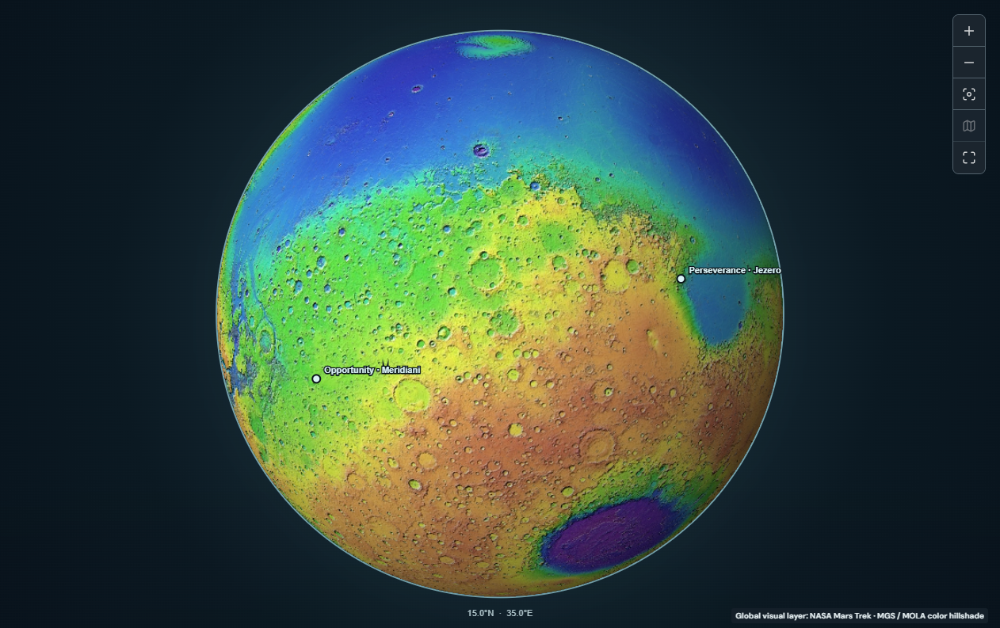
Start with the whole planet
The first view is a global color hillshade from NASA Mars Trek. Drag to pan, scroll to zoom, and use the mission labels or region buttons to open a local study. Find a place accepts a rover name or signed latitude and longitude, such as 18.44, 77.45. The colors help you see large landforms; they are not direct height readings.
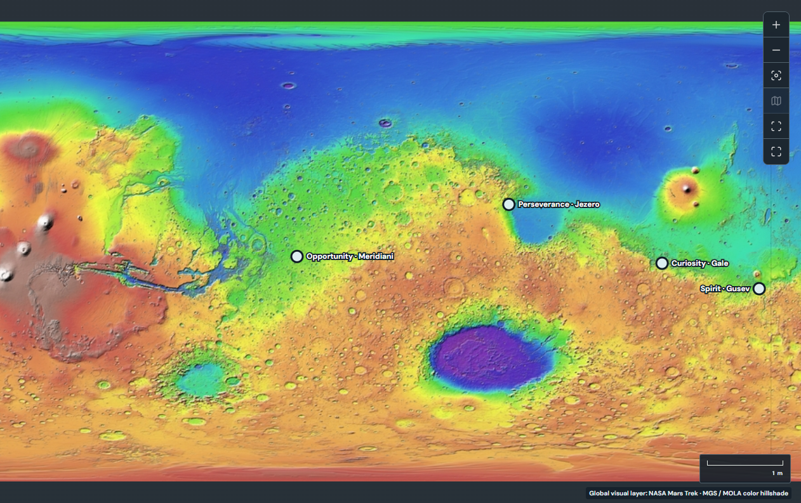
Change perspective in 3D
Choose 3D globe above the map. Hold the left mouse button and drag to rotate. Scroll to zoom. Hovering alone does nothing. The globe uses the same rendered MOLA product as the 2D map; it is a visual model rather than a planet-wide numerical DEM.
Open a landing region
Select Plan a route above the map, then use the region menu. Jezero and Gale have numerical terrain grids for route studies. Gusev has orbital imagery and a documented Spirit landing position. Use All of Mars to return to the planet map.
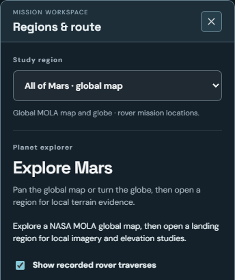
See where rovers drove
The dashed line in Jezero shows the recorded Perseverance traverse. Gale shows Curiosity’s recorded traverse. These come from public JPL map feeds and are simplified for display. They are separate from the solid route options that Mars Atlas calculates. Spirit and Opportunity are linked to NASA’s published traverse maps where a coordinate path is not plotted here.
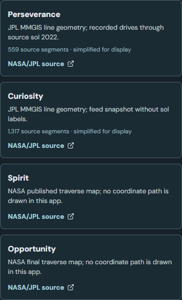
Read the local map first
Jezero opens on orbital imagery with measured terrain footprints and a historical rover line. The colored route choices are software calculations over sampled elevation cells. The dashed rover line records past driving. Use the map toolbar for Choose point, Inspect height, and Measure.
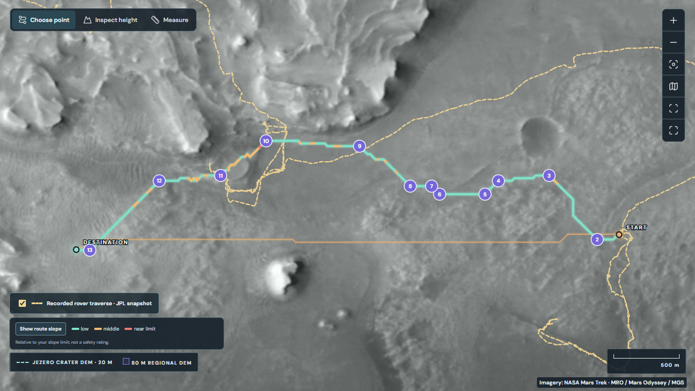
Set a start and destination
Open Plan a route above the map. Use the cited landing site and rover position, type coordinates, or press the target icon beside a stop and click the map. An optional waypoint adds a route through one more location. The preset rover position is historical; the path between points is a new model result.
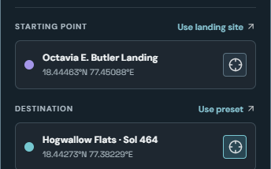
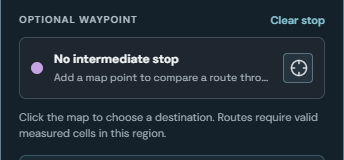
Choose the route limits
The slope slider limits the angle between adjacent elevation samples. Speed sets a simple one-way travel estimate. The time budget marks whether a calculated path fits your scenario. Change a setting and the app recalculates. These controls do not represent an approved astronaut or rover operating standard.
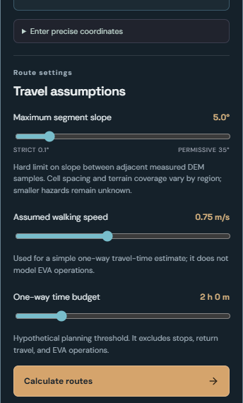
Compare visual products
CTX is the local image background. MOLA gives broad color terrain context. Where available, HiRISE adds more image detail and THEMIS adds a historical daytime infrared layer. The opacity sliders help compare layers. Image detail does not establish numerical elevation or safe footing.
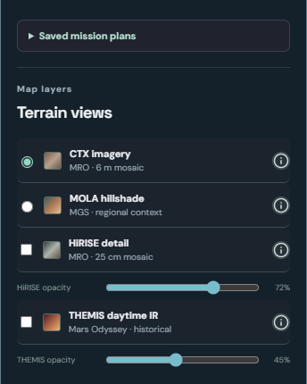
Pick the route you want to inspect
The shortest option minimizes distance within your slope limit. The gentler option adds a cost for steep cells and may travel farther. A waypoint adds a third choice when set. Select a card to update the map, directions, elevation profile, and export. Distance, slope, ascent, and time are calculated by Mars Atlas.
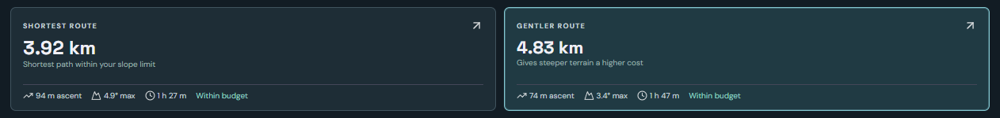
Read the turn and heading
Open Directions on the right. Each leg gives a turn, a north-referenced heading, a segment distance, and the checkpoint coordinate. Choose a checkpoint to center it on the 2D map. These directions follow the model path at DEM cell scale and are not rover commands.
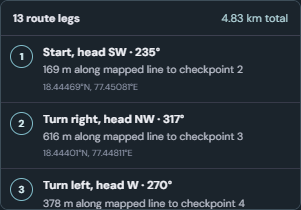
Check the source before a result
The evidence panel stays open. Its source tabs show the named terrain and image products. For a numerical grid, check sample spacing, valid cells, package checksum, limitations, and the original USGS record. The route analysis below it is derived from those sampled values.
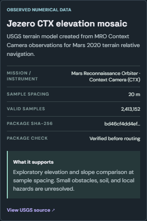
Orbit measured terrain
In Jezero or Gale, choose 3D elevation. Left drag to orbit and scroll to zoom. The mesh comes from a sampled numerical DEM and uses vertical exaggeration to make relief easier to see. Switch back to 2D to place points or inspect individual height samples.
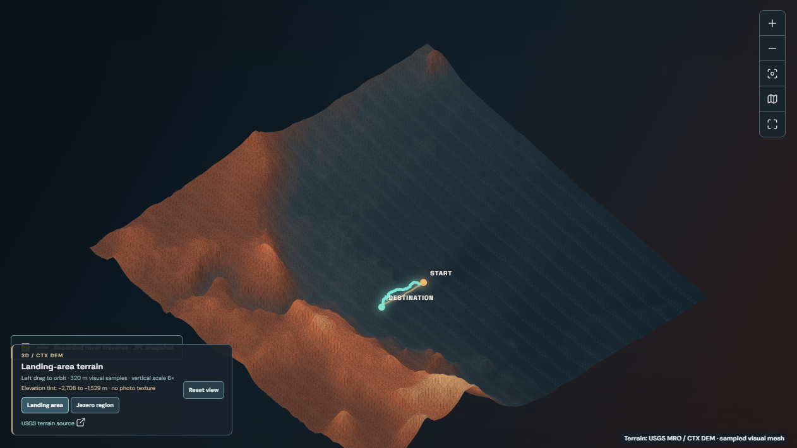
Gale and Gusev behave differently
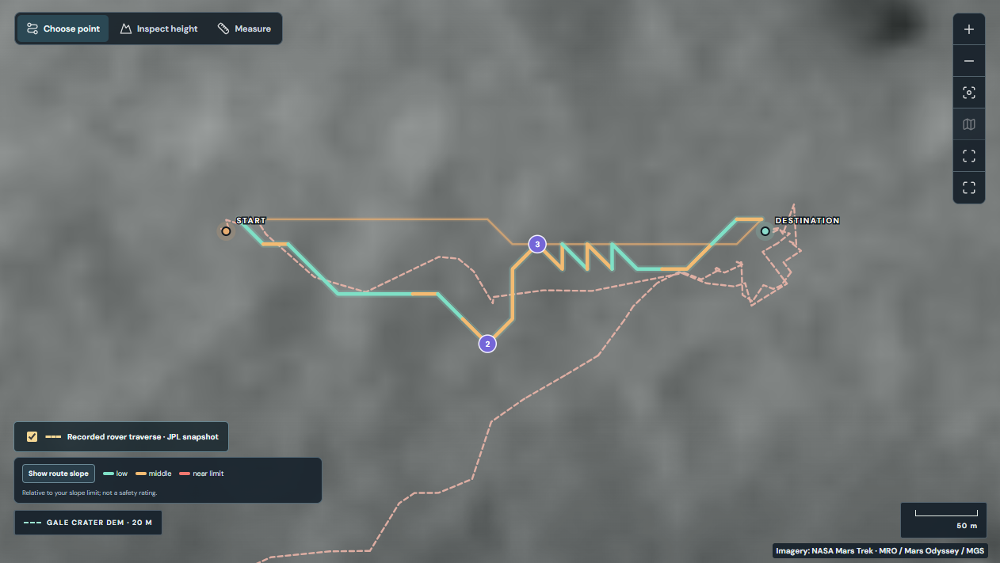
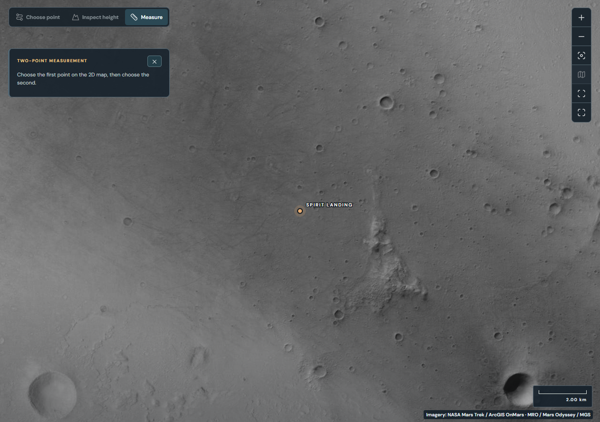
Export the study, cite the inputs
In Jezero or Gale, Export brief saves the active route’s settings, calculated metrics, source identifiers, links, and limitations. Use the resource register for the complete list of NASA, USGS, ESA, software, font, and tool sources. The register also distinguishes observed data from our calculations.
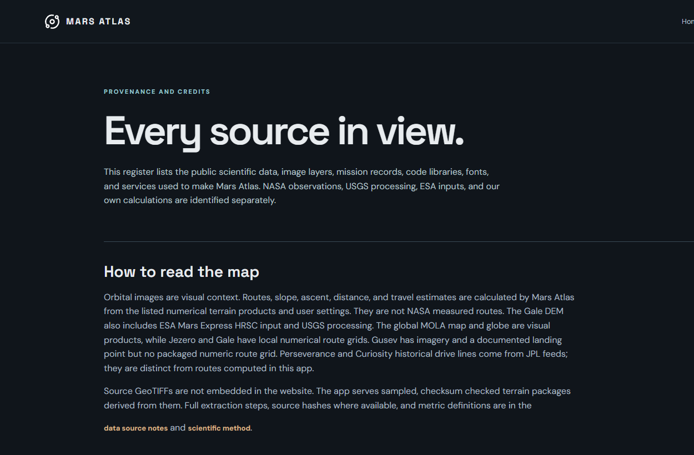